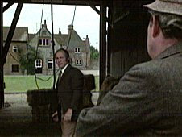

|
|
HELP FIND THE FOLLOWING LOCATIONS
PAGE 72
THE NEW AVENGERS: To Catch A Rat (James Hill: Summer 1976)Unknown 1 – Gunner (Ian Hendry) is discovered sleeping in a barn. Later Cledge (Barry Jackson) arrives at the farm to talk the farmer (Dallas Cavell).

Think you know a spot? Need a bigger image? Email me.
< Previous | Index | Avengerland | Next >
Copyright © 2003 Anthony R. McKay